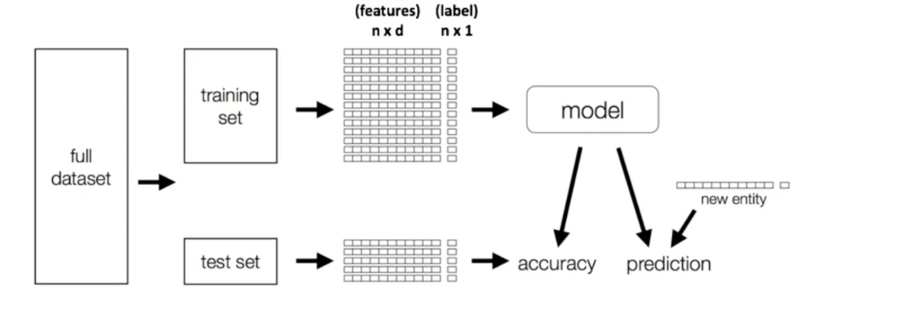

Chapter 1 - Introduction to Spark
Data Sources Connectivity

Databricks notebook
%run ./Mount-Datasets
Parquet
Parquet is an open source file format built to handle flat columnar storage data formats.
-
Operates well with complex data in large volumes.
-
It is known for its both performant data compression and its ability to handle a wide variety of encoding types.
-
Deploys Google's record-shredding and assembly algorithm that can address complex data structures within data storage.
-
Some Parquet benefits include:
-
Fast queries that can fetch specific column values without reading full row data
-
Highly efficient column-wise compression
-
High compatibility with with OLAP
-
Parquet vs CSV
-
CSV is simple and the most widely used data format. Row oriented format
-
Parquet is column oriented
-
Row-oriented formats are optimized for OLTP workloads
-
Column-oriented formats are better suited for analytical workloads.
-
Column-oriented databases such as AWS Redshift Spectrum bill by the amount data scanned per query
- Therefore, converting CSV to Parquet with partitioning and compression lowers overall costs and improves performance
-
Parquet has helped its users reduce storage requirements by at least one-third on large datasets, in addition, it greatly improves scan and de-serialization time, hence the overall costs.
Data
| Name | Qty | State |
|---|---|---|
| Apple | 100 | NH |
| Pear | 200 | MA |
| Peach | 400 | CA |
- Row-Oriented Store
| RowID | Value |
|---|---|
| Row#1 | Apple |
| Row#1 | 100 |
| Row#1 | NH |
| --- | --- |
| Row#2 | Pear |
| Row#2 | 100 |
| Row#2 | MA |
| --- | --- |
| Row#3 | Peach |
| Row#3 | 400 |
| Row#3 | CA |
- Col-Oriented Store
| Col | Value |
|---|---|
| Name | Apple |
| Name | Pear |
| Name | Peach |
| --- | --- |
| Qty | 100 |
| Qty | 200 |
| Qty | 400 |
| --- | --- |
| State | NH |
| State | MA |
| State | CA |
Working with Parquet file example
val data = Seq(("Apple",100, "NH"),
("Pear",200, "MA"),
("Peach",400, "CA")
)
val columns = Seq("name","qty","state")
import spark.sqlContext.implicits._
// data to dataFrame
val df = data.toDF(columns:_*)
// look at the df
df.show()
df.printSchema()
val fruitsFile = "/tmp/fruits.parquet"
// write this dataFrame to parquet file
df.write.parquet(fruitsFile)
// reading this parquet file into a dataFrame
val fruitsDF = df.read.parquet(fruitsFile)
// SQL queries on parquet file
fruitsDF.createOrReplaceTempView("FruitsParquetTable")
val parkSQL = spark.sql("SELECT * FROM FruitsParquetTable WHERE qty >= 10 ")
Spark MLlib
- MLlib is Apache Spark's scalable machine learning library.
Transformers and Estimators
StringIndexer
| id | category |
|---|---|
| 0 | apple |
| 1 | mango |
| 2 | peach |
| 3 | apple |
| 4 | apple |
| 5 | peach |
category is a string column with three labels: “apple”, “mango”, and “peach”. Applying StringIndexer with category as the input column and categoryIndex as the output column, we should get the following:
| id | category | categoryIndex |
|---|---|---|
| 0 | apple | 0.0 |
| 1 | mango | 2.0 |
| 2 | peach | 1.0 |
| 3 | apple | 0.0 |
| 4 | apple | 0.0 |
| 5 | peach | 1.0 |
import org.apache.spark.ml.feature.StringIndexer
val df = spark.createDataFrame(
Seq((0, "apple"), (1, "mango"), (2, "peach"), (3, "apple"), (4, "apple"), (5, "peach"))
).toDF("id", "category")
val indexer = new StringIndexer()
.setInputCol("category")
.setOutputCol("categoryIndex")
val indexed = indexer.fit(df).transform(df)
indexed.show()
OneHotEncoder
- maps a categorical feature, represented as a label index, to a binary vector with at most a single one-value indicating the presence of a specific feature value from among the set of all feature values.
import org.apache.spark.ml.feature.OneHotEncoder
val df = spark.createDataFrame(Seq(
(0.0, 1.0),
(1.0, 0.0),
(2.0, 1.0),
(0.0, 2.0),
(0.0, 1.0),
(2.0, 0.0)
)).toDF("categoryIndex1", "categoryIndex2")
// setup encoder - OneHotEncoder
val encoder = new OneHotEncoder()
.setInputCols(Array("categoryIndex1", "categoryIndex2"))
.setOutputCols(Array("categoryVec1", "categoryVec2"))
// fit it
val model = encoder.fit(df)
// transform the df
val encoded = model.transform(df)
encoded.show()
VectorAssembler
Spark ML works on single column instead of array columns.
VectorAssembler is a transformer that combines a given list of columns into a single vector column. - It is useful for combining raw features and features generated by different feature transformers into a single feature vector, in order to train ML models like logistic regression and decision trees.
- VectorAssembler accepts the following input column types:
- all numeric types, boolean type, and vector type.
- In each row, the values of the input columns will be concatenated into a vector in the specified order.
| id | hour | mobile | userFeatures | clicked |
|---|---|---|---|---|
| 0 | 18 | 1.0 | [0.0, 10.0, 0.5] | 1.0 |
| id | hour | mobile | userFeatures | clicked | features |
|---|---|---|---|---|---|
| 0 | 18 | 1.0 | [0.0, 10.0, 0.5] | 1.0 | [18.0, 1.0, 0.0, 10.0, 0.5] |
import org.apache.spark.ml.feature.VectorAssembler
import org.apache.spark.ml.linalg.Vectors
val dataset = spark.createDataFrame(
Seq((0, 18, 1.0, Vectors.dense(0.0, 10.0, 0.5), 1.0))
).toDF("id", "hour", "mobile", "userFeatures", "clicked")
val assembler = new VectorAssembler()
.setInputCols(Array("hour", "mobile", "userFeatures"))
.setOutputCol("features") // output column
val output = assembler.transform(dataset) // transform the dataset
println("Assembled columns 'hour', 'mobile', 'userFeatures' to vector column 'features'")
output.select("features", "clicked").show(false)
VectorIndexer
Linear Regression
import org.apache.spark.ml.regression.LinearRegression
// Load training data
val training = spark.read.format("libsvm")
.load("data/mllib/sample_linear_regression_data.txt")
val lr = new LinearRegression()
.setMaxIter(10)
.setRegParam(0.3)
.setElasticNetParam(0.8)
// Fit the model
val lrModel = lr.fit(training)
// Print the coefficients and intercept for linear regression
println(s"Coefficients: ${lrModel.coefficients} Intercept: ${lrModel.intercept}")
// Summarize the model over the training set and print out some metrics
val trainingSummary = lrModel.summary
println(s"numIterations: ${trainingSummary.totalIterations}")
println(s"objectiveHistory: [${trainingSummary.objectiveHistory.mkString(",")}]")
trainingSummary.residuals.show()
println(s"RMSE: ${trainingSummary.rootMeanSquaredError}")
println(s"r2: ${trainingSummary.r2}")
ML Pipelines
ML Pipelines provide a uniform set of high-level APIs built on top of DataFrames that help users create and tune practical machine learning pipelines.

from pyspark.ml import Pipeline
// setup the pipeline
featurizationPipeline = Pipeline(stages=[ ])
// fitting
featurizationPipeline.fit(df).transform(df)
import org.apache.spark.ml.{Pipeline, PipelineModel}
import org.apache.spark.ml.classification.LogisticRegression
import org.apache.spark.ml.feature.{HashingTF, Tokenizer}
import org.apache.spark.ml.linalg.Vector
import org.apache.spark.sql.Row
// Prepare training documents from a list of (id, text, label) tuples.
val training = spark.createDataFrame(Seq(
(0L, "a b c d e spark", 1.0),
(1L, "b d", 0.0),
(2L, "spark f g h", 1.0),
(3L, "hadoop mapreduce", 0.0)
)).toDF("id", "text", "label")
// Configure an ML pipeline, which consists of three stages: tokenizer, hashingTF, and lr.
val tokenizer = new Tokenizer()
.setInputCol("text")
.setOutputCol("words")
val hashingTF = new HashingTF()
.setNumFeatures(1000)
.setInputCol(tokenizer.getOutputCol)
.setOutputCol("features")
val lr = new LogisticRegression()
.setMaxIter(10)
.setRegParam(0.001)
val pipeline = new Pipeline()
.setStages(Array(tokenizer, hashingTF, lr))
// Fit the pipeline to training documents.
val model = pipeline.fit(training)
// Now we can optionally save the fitted pipeline to disk
model.write.overwrite().save("/tmp/spark-logistic-regression-model")
// We can also save this unfit pipeline to disk
pipeline.write.overwrite().save("/tmp/unfit-lr-model")
// And load it back in during production
val sameModel = PipelineModel.load("/tmp/spark-logistic-regression-model")
// Prepare test documents, which are unlabeled (id, text) tuples.
val test = spark.createDataFrame(Seq(
(4L, "spark i j k"),
(5L, "l m n"),
(6L, "spark hadoop spark"),
(7L, "apache hadoop")
)).toDF("id", "text")
// Make predictions on test documents.
model.transform(test)
.select("id", "text", "probability", "prediction")
.collect()
.foreach { case Row(id: Long, text: String, prob: Vector, prediction: Double) =>
println(s"($id, $text) --> prob=$prob, prediction=$prediction")
}
Featurization:
- Encoding categorical variables
- Normalizing
- Creating new features
- Handling missing values
- Binning/discretizing
